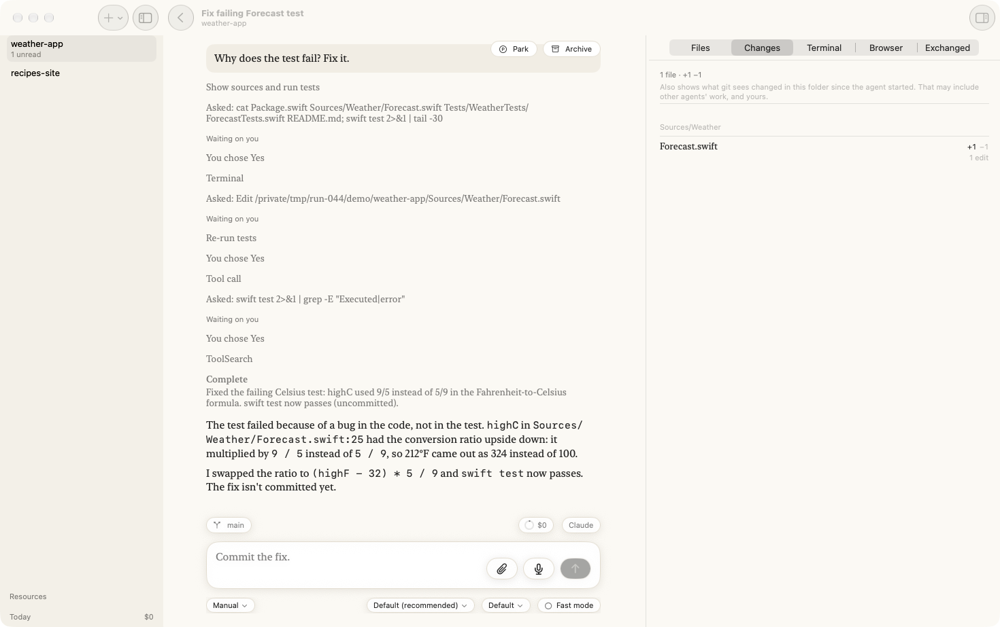
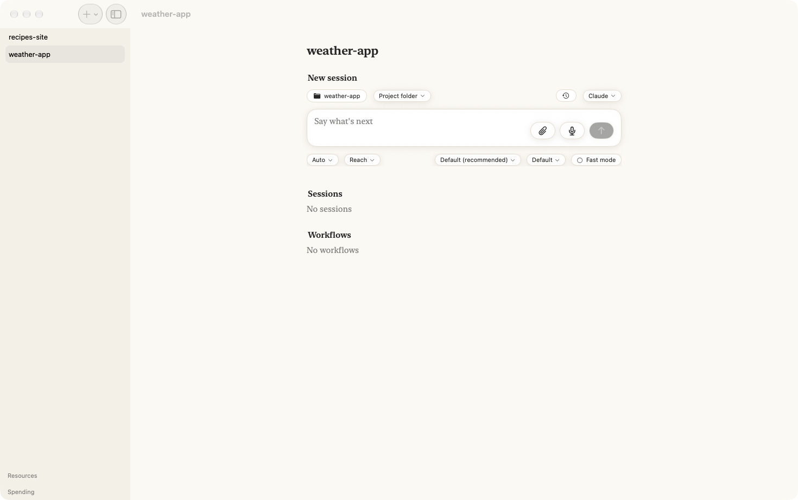
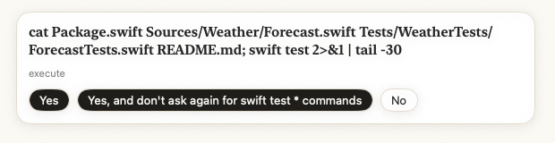
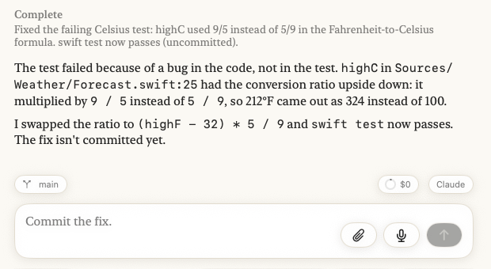
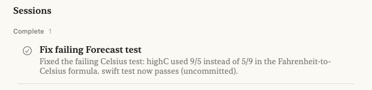

Your first agent¶
In this tutorial you build Agents on your Mac, give it a small project with a failing test, and ask an agent to fix it. You answer the agent's questions as it works, and at the end you read what it changed. It takes about fifteen minutes, most of it the first build.
What you'll have at the end: a finished agent, its fix in your project, and a feel for how every agent in the app works.

Before you start¶
- A Mac with Xcode installed.
- One coding agent signed in on this Mac. This tutorial uses Claude Code, signed in
with
claudeand/loginin Terminal. The app talks to Claude through a small adapter: it runs it with your own Node if you have one, and otherwise installs its own copy in step 1. Codex, Gemini, Antigravity, Grok, Copilot and Cursor work too; see Runtimes for what each needs.
1. Build and open Agents¶
Agents is built from its source. In Terminal:
brew install xcodegen
git clone https://github.com/alexec/Agents.git
cd Agents
xcodegen generate
open Agents.xcodeproj
On a Mac, Agents is two apps: Agents Host runs your agents, and Agents is the window you work in. Build and run both from Xcode, Agents Host first:
- Choose the AgentsHost scheme with My Mac as the destination, and choose Product ▸ Run. The first build takes a few minutes. Agents Host starts this Mac's agents and its control plane, and keeps them running with its window closed.
- Choose the AgentsStore scheme and choose Product ▸ Run. This is the window.
The window opens on Where should your agents run? After a moment it says Agents Host is running on this Mac. Click Pair: Agents Host shows a code, and the window asks for it. Type or paste the code and click Connect.
You should see the Agents window, with a Get started card at the top of the sidebar. It is a checklist from here to your first agent, and each step ticks itself when it is done:
- Pair this window with Agents Host: done already.
- Install an agent runtime: if it is not ticked, click Install. A sheet lists every runtime the app knows and whether it is on this Mac. If Claude's row says Not on this Mac, click Install on it and wait for it to finish. You need none of the others for this tutorial. The same rows are in Settings ▸ Agent Runtimes.
- Add a project: steps 2 and 3 of this tutorial.
- Start your first agent: step 4.
- Pair a phone or browser: optional, and not part of this tutorial.
Click × on the card to put it away before you are done; it does not come back.
2. Make a project to work on¶
A project is a folder you work in. For this tutorial, make a small one with a bug in it: a weather forecast that converts Fahrenheit to Celsius the wrong way round. In Terminal:
mkdir -p ~/Demo/weather-app/Sources/Weather ~/Demo/weather-app/Tests/WeatherTests
cd ~/Demo/weather-app
cat > Package.swift <<'EOF'
// swift-tools-version:5.9
import PackageDescription
let package = Package(
name: "Weather",
targets: [
.target(name: "Weather"),
.testTarget(name: "WeatherTests", dependencies: ["Weather"]),
]
)
EOF
cat > Sources/Weather/Forecast.swift <<'EOF'
public struct Forecast {
public var day: String
public var highF: Double
public var lowF: Double
public init(day: String, highF: Double, lowF: Double) {
self.day = day
self.highF = highF
self.lowF = lowF
}
/// The high in Celsius.
public var highC: Double {
(highF - 32) * 9 / 5
}
}
EOF
cat > Tests/WeatherTests/ForecastTests.swift <<'EOF'
import XCTest
@testable import Weather
final class ForecastTests: XCTestCase {
func testHighInCelsius() {
let monday = Forecast(day: "Monday", highF: 212, lowF: 50)
XCTAssertEqual(monday.highC, 100, accuracy: 0.01)
}
}
EOF
git init -q && git add -A && git commit -qm "First version"
3. Add it to Agents¶
In the Agents window, click Add Project… on the Get started card or in the empty
project list (once you have projects, it is File ▸ Add Project…), and pick
weather-app in your Demo folder.
You should see weather-app in the list on the left, and beside it an empty new session:
the project's name in the middle, and the prompt at the bottom.

4. Start the agent¶
The runtime is on the right, above the prompt. It should say Claude. If you have not
signed Claude Code in on this Mac yet, do it now in Terminal: run claude, type /login,
and follow what it asks. To check, click Claude above the prompt and choose Sign in,
sign out, providers…: the sheet names the account you are signed in with. Then come back
here.
Click in the prompt, where it says What do you want to do?, type:
Why does the test fail? Fix it.
and press Return.
You should see the conversation open, with your question at the top and the agent's first steps appearing under it.
5. Answer its questions¶
Before the agent runs a command or changes a file, it asks you. A card appears above the prompt, naming what it wants to do.

Click Yes. It will ask two or three times: to read the files and run the tests, to
edit Forecast.swift, and to run the tests again. Click Yes each time.
While it waits for you, the project in the list says Needs you. That is how you know an agent wants you, even when you are looking at something else.
6. Read what it did¶
When the agent has finished, it says Complete with a one-line summary, then explains what was wrong and what it changed.

On the right, Changes lists the one file it edited. Click Forecast.swift to see
the line it changed. Above the prompt, the agent suggests what you might say next, such
as Commit the fix. You can take it, change it, or ignore it.
7. Find it again¶
Click the back arrow at the top of the conversation.
You should see the agent on the project's page under Done, named for what it did, with its summary under the name.

That is the whole loop: ask, answer, read. Every agent in the app works this way, whether it runs for a minute or an afternoon.
Where next¶
- Follow your agents from your iPhone, the next tutorial.
- Start an agent in its own worktree, so two agents in one project do not change the same files.
- Read an agent's changes, file by file and word by word.
- Why agents keep working when the window is closed.